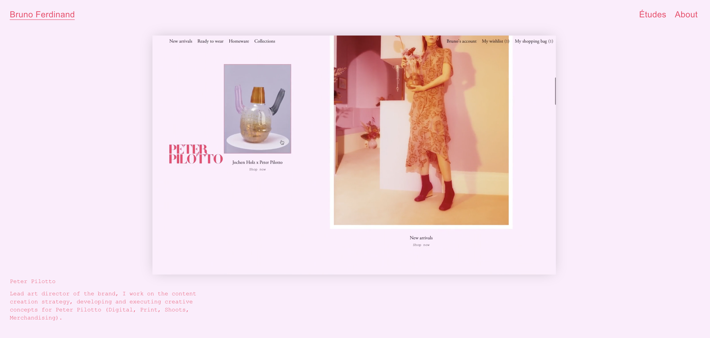
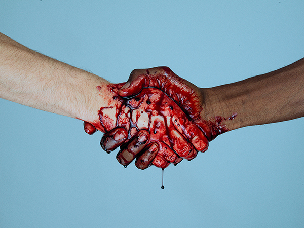
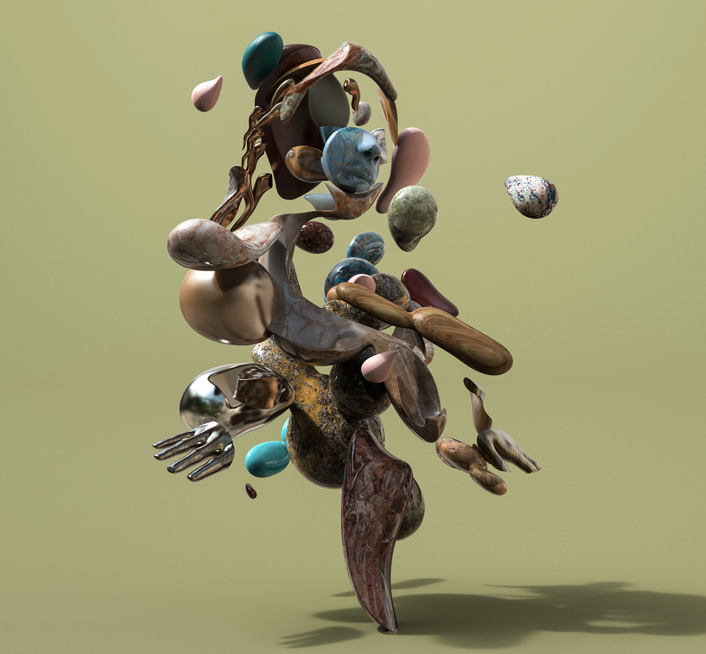
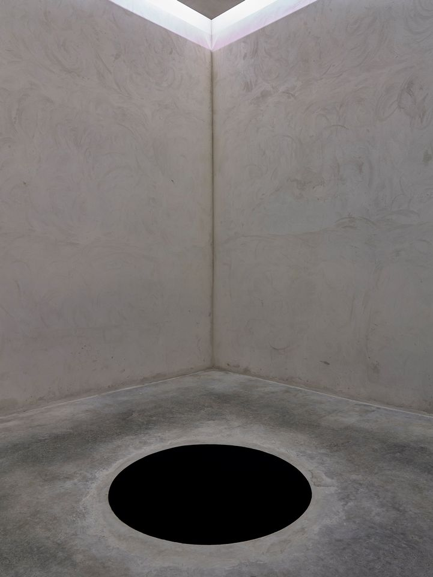
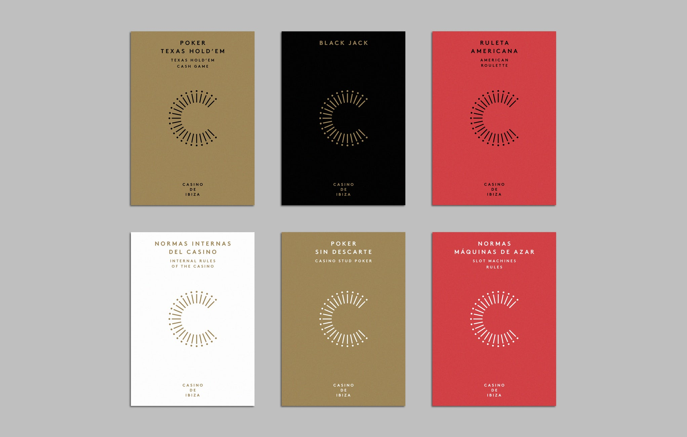

Questions
I believe that design influences people to think and act in various ways. But for designers themselves, – who use their personal influences in their work – I wonder how much their own designs influence them in turn? How does that back and forth take place? In what ways can that exchange be transformed?
Readings
Sapiens by Yuval Noah Harari
Sapiens is a non-fiction book about the history of Homo Sapiens and while dealing historical content the author provokes us to think about our current world, but adding his own commentary and cultural questions. It’s blowing my mind away and making mequestion everything around us - our ‘achievements’ in the physical world as well as our belief systems and collective notions. Design tends to influence how humans experience the world and this book gives a great insight on how and why humans navigate the world in the way they do - which in turn helps guide design solutions.
Compassion Inc. by Gaurav Sinha
Compassion Inc. is all about ‘monastic materialism’ and bridging the corporate world to the social issues that arise around us.
Century-Old Decisions That Impact Children Every Day
In addition to these books, I read an article on NPR ED on the design of classrooms and how that affects students’ learning experiences. It focuses on Alexandra Lange's book 'The Design of Childhood'. It makes me reflect on my summer internship as I interned at an architecture studio that specializes in redesigning learning spaces. Most classrooms have not been redesigned from when they were first built around 60 years ago, and this has an immense impact on a child’s learning experience today.
Observations
A human
“A future where self-expression isn't defined by what you put on your body, but how you change your body.”
A human is a theatrical art experience by Society of Spectacle, a live entertainment storytelling brand founded by Simon Huck. This exhibition explores the future of fashion and examines the idea of modifying our bodies.
I’m drawn to this because of it’s radical ideas and the intersection of so many kinds of media - theatre, art, music and fashion. I also think the concept is extremely thought-provoking as it builds on existing themes and extends them to an extreme level to elicit emotional and behavioral responses. Although I won’t make it to the exhibition itself, just their products, website and idea pushes me to think deeper about the subject.
Images + Methods

Bruno Ferdinand's Website
Tyler Shields
NastPlas - Fran R. Learte and Natalia Molinos
Descent into Limbo, Anish Kapoor
Atlas Design